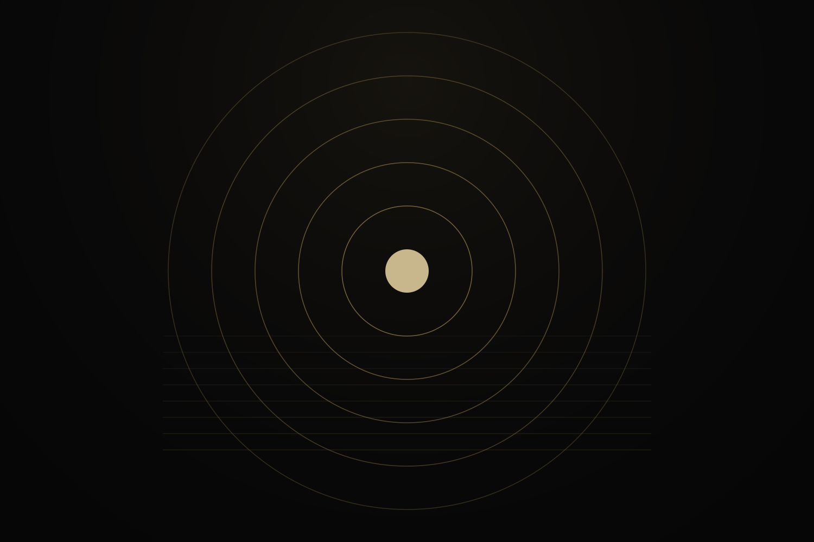
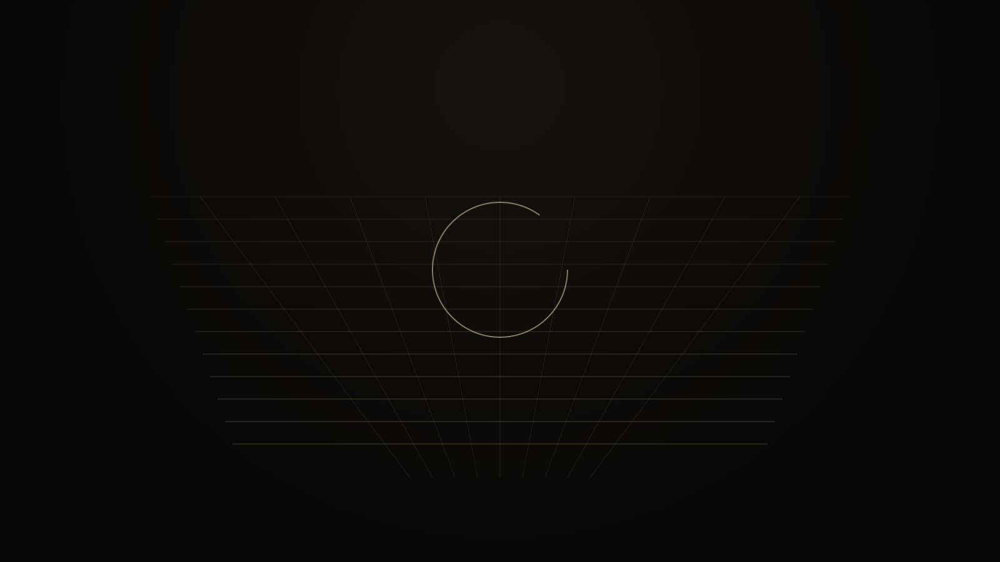
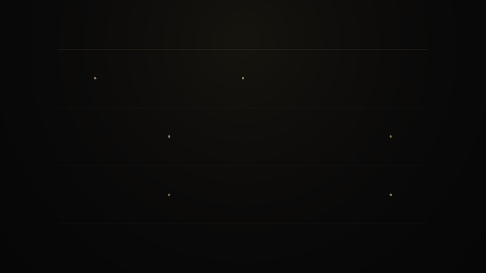

05 · Cryptology
Factorization-adjacent research, without the classical script
Full public technical brief: endpoint chains, floor transport, reciprocal closure, residual state, and structural certificates. Not ordinary search over candidate factors.

Status discipline
Nothing here claims RSA is broken at scale. Ladder rows are measured inside exact case IDs. Open cases remain unresolved.



Modulus-link map lab
Click each station1
Locked endpoint chain
Ordered public endpoints as the working object.
2
Floor transport
Carry structure through the modulus by floor-scale maps.
3
Reciprocal closure
Ask whether reciprocal endpoint structure closes consistently.
4
Residual state
What remains when the certificate is not finished.
5
Certificate or unresolved
Emit structure, or refuse to fake closure.



| Case ID | Public outcome | Status |
|---|---|---|
rsa_v2_40bit_static_001 | Endpoint class (1048559, 1048589) | Measured · resolved |
rsa_v2_50bit_static_001 | Reciprocal carrier misalignment | Unresolved |
rsa_v2_64bit_static_001 | Endpoint class (3221225473, 3221275501) | Measured · resolved |